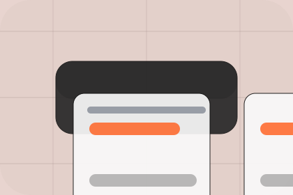

Guide
A useful entry point for visitors who need more context before they send an RFQ.
Resources / 01
Resources opens as a clear manufacturing decision hub: what Line offers, who it helps, why it matters, and which route to take first.
The first screen combines positioning, proof, primary action, and fast internal navigation, so people can act immediately or compare the rest of the resources route with context.
Precision product hero
Select the closest route and Line keeps the next step, proof, and follow-up expectation aligned with capacity and quality confidence.
Resources / 02
Datasheets gives researching visitors a practical route into guides, checklists, and comparison material without leaving the site structure.
Each resource behaves like a useful internal link, giving cold and warm visitors a way to learn, compare, and return to the action path.
Explore ResourcesA useful entry point for visitors who need more context before they send an RFQ.
A scannable comparison aid that makes research usable before the next decision.
A route back to support, services, or contact when the visitor is ready to act.
Resources / 03
Specs gives researching visitors a practical route into guides, checklists, and comparison material without leaving the site structure.
Each resource behaves like a useful internal link, giving cold and warm visitors a way to learn, compare, and return to the action path.
Explore ResourcesA useful entry point for visitors who need more context before they send an RFQ.
Resources / 04
Guides gives researching visitors a practical route into guides, checklists, and comparison material without leaving the site structure.
Each resource behaves like a useful internal link, giving cold and warm visitors a way to learn, compare, and return to the action path.
View ResourcesA useful entry point for visitors who need more context before they send an RFQ.
A scannable comparison aid that makes research usable before the next decision.
A route back to support, services, or contact when the visitor is ready to act.
A useful entry point for visitors who need more context before they send an RFQ.
Open resourceA scannable comparison aid that makes research usable before the next decision.
Open resourceA route back to support, services, or contact when the visitor is ready to act.
Open resourceResources / 05
Tolerances gives researching visitors a practical route into guides, checklists, and comparison material without leaving the site structure.
Each resource behaves like a useful internal link, giving cold and warm visitors a way to learn, compare, and return to the action path.
Explore ResourcesA useful entry point for visitors who need more context before they send an RFQ.
A scannable comparison aid that makes research usable before the next decision.
A route back to support, services, or contact when the visitor is ready to act.
Resources / 06
Materials gives researching visitors a practical route into guides, checklists, and comparison material without leaving the site structure.
Each resource behaves like a useful internal link, giving cold and warm visitors a way to learn, compare, and return to the action path.
Explore ResourcesA useful entry point for visitors who need more context before they send an RFQ.
A scannable comparison aid that makes research usable before the next decision.
A route back to support, services, or contact when the visitor is ready to act.
Resources / 07
Downloads gives researching visitors a practical route into guides, checklists, and comparison material without leaving the site structure.
Each resource behaves like a useful internal link, giving cold and warm visitors a way to learn, compare, and return to the action path.
View ResourcesA useful entry point for visitors who need more context before they send an RFQ.
A useful entry point for visitors who need more context before they send an RFQ.
Open resourceA scannable comparison aid that makes research usable before the next decision.
Open resourceA route back to support, services, or contact when the visitor is ready to act.
Open resourceResources / 08
Preparation gives researching visitors a practical route into guides, checklists, and comparison material without leaving the site structure.
Each resource behaves like a useful internal link, giving cold and warm visitors a way to learn, compare, and return to the action path.
Explore ResourcesA useful entry point for visitors who need more context before they send an RFQ.
A scannable comparison aid that makes research usable before the next decision.
A route back to support, services, or contact when the visitor is ready to act.
Resources / 09
Library gives researching visitors a practical route into guides, checklists, and comparison material without leaving the site structure.
Each resource behaves like a useful internal link, giving cold and warm visitors a way to learn, compare, and return to the action path.
Explore ResourcesA useful entry point for visitors who need more context before they send an RFQ.
A scannable comparison aid that makes research usable before the next decision.
A route back to support, services, or contact when the visitor is ready to act.
Precision product hero
Select the closest route and Line keeps the next step, proof, and follow-up expectation aligned with capacity and quality confidence.
Resources / 10
Line closes the resources route with a clear action, a quick reminder of the value, and a low-friction way to send an RFQ.
Visitors who are ready can use the primary action. Visitors who are still comparing can scan the section links, proof, and support routes before they send an RFQ.
Send RFQThe final block keeps the choice simple: act now, compare one more proof route, or send enough detail for a focused response.
Send RFQcapacity and quality confidence
A production capability site with product-spec tables, precise media panels, facility proof, and RFQ routing. Resources ends with a direct path to send an RFQ, plus enough context for visitors who still need to compare.

Send RFQInformation is provided for planning and should be reviewed for the final client, location, and operating rules.